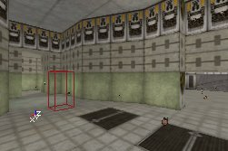
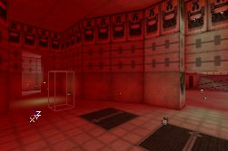
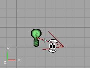
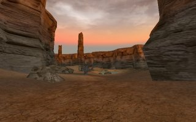
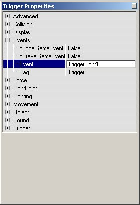

UDN
Search public documentation:
TypesOfLightsJP
English Translation
한국어
Interested in the Unreal Engine?
Visit the Unreal Technology site.
Looking for jobs and company info?
Check out the Epic games site.
Questions about support via UDN?
Contact the UDN Staff
한국어
Interested in the Unreal Engine?
Visit the Unreal Technology site.
Looking for jobs and company info?
Check out the Epic games site.
Questions about support via UDN?
Contact the UDN Staff
ライトの種類
ドキュメントの概要: 各種ライトアクタおよびライトの材料についてご紹介します。 ドキュメントの変更ログ: 最終更新者Jason Lentz(DemiurgeStudios)が管理性を向上するようドキュメントを分割。原文作成者はLode Vandevenne(UdnStaff)はじめに
ライト設置のもっとも代表的な方法はやはり、レベル内で右クリックして追加するベーシック ライトですが、この他にも様々なライトの追加方法が用意されています。ここでは、各ライトの解説および最適な用法について説明します。ZoneLight(ゾーンライト)
その次によく使われるマップ内のライト設置方法がZoneLight(ゾーンライト)、つまりアンビエントライトで、ライトアクタの設定が不要なライトです。均一な平面光がゾーン全体のあらゆるウォールやオブジェクトを照らしますが、シャドウが掛からず光源も感じさせません。ZoneLight(ゾーンライト)はシャドウの暗さを和らげたい部分、テレイン、そして極めて明るくしたい空間などのライト設定に適しています。 あるゾーンのアンビエントライトをマップ上で変更するには、そのゾーンのZoneInfo(ゾーンの情報)アクタのプロパティを開いて行います。またZoneInfoがない場合は、[View](表示)の[Level Properties](レベルのプロパティ)を開きます。(ZoneInfoがなくても、Level Propertiesでゾーンの各種設定が行えるのです。)開いたら、[ZoneLight](ゾーンライト)を展開してください。 実際のZoneLightで要となる設定項目は、AmbientBrightness(アンビエント輝度)、AmbientHue(アンビエント色相)、およびAmbientSaturation(アンビエント彩度)です。各設定はLightBrightness(ライトの輝度)、LightHue(ライトの色相)、およびLightSaturation(ライト の彩度)に相当します。つまり、これらの設定によりZoneLightの輝きが決まります。またAmbientBrightnessの設定値が
実際のZoneLightで要となる設定項目は、AmbientBrightness(アンビエント輝度)、AmbientHue(アンビエント色相)、およびAmbientSaturation(アンビエント彩度)です。各設定はLightBrightness(ライトの輝度)、LightHue(ライトの色相)、およびLightSaturation(ライト の彩度)に相当します。つまり、これらの設定によりZoneLightの輝きが決まります。またAmbientBrightnessの設定値が 0 のままだと、ご覧の通りゾーン内にはZoneLight(ゾーンライト)がなく、ライトアクタが発するライトのみとなってしまします。
 ではここで、AmbientBrightness(アンビエント輝度)を32と128に設定してみましょう。変更後の各イメージはこのようになります。
ではここで、AmbientBrightness(アンビエント輝度)を32と128に設定してみましょう。変更後の各イメージはこのようになります。

 今度は設定値を255にしてみます。すると、ゾーン内の全サーフェスがほぼ最高輝度となり、マップのライトアクタによる光はほとんど見えなくなってしまうのでご注意ください。
今度は設定値を255にしてみます。すると、ゾーン内の全サーフェスがほぼ最高輝度となり、マップのライトアクタによる光はほとんど見えなくなってしまうのでご注意ください。

AmbientHue(アンビエント色相)やAmbientSaturation(アンビエント彩度)では、Ambient Lighting(アンビエントライト)の色合いが調整できます。

その他のライトアクタ
ライトアクタの機能はライトの設置だけではありません。Lighting(ライティング)およびLightColor(ライトの色)の両プロパティを設定すれば、どんなアクタ クラスでも発光させることができます。あるアクタ クラスのライティングを有効にするには、LightTypeの設定がLT_None(ライトなし)でないこと、LightRadius(照明範囲)＞0であること、さらにLightBrightness(ライトの輝度)＞0であること、を確認します。中には発光しないアクタもありますが、これは静的メッシュのように、発光がアクタ内側となるためアクタのシャドウができる原因となってしまうためです。 [Actor Class Browser](アクタクラス ブラウザ)にも用途を特化したライトがあります。以下にライトのサブクラスをご紹介します。
- SpotLight(スポットライト)： これは、LightEffect(ライトの効果)にLE_SpotlLight(スポットライト効果)が適用され、bDirectional(ライトの方向)の設定が予め有効になっているライトです。
- Sunlight(太陽光)： これは、LightEffectにLE_Sunlightが適用され、bDirectionalの設定が予め有効で、さらに独自の太陽光のスプライト シンボルを備えたライトです。LightEffectやbDirectionalの手動設定が煩わしい場合には、このライトを太陽光として利用します。
- TriggerLight(トリガ ライト)： これは、トリガによってオンオフが切り替わるライトです。
Spotlight(スポットライト)
LightEffect(ライトの効果)をLE_SpotLight(スポットライト効果)に設定すると、ライトを回転させながらスポットライトの方向を設定できます。まず、[Light Properties]→[Advanced] (ライトのプロパティ→拡張機能) でbDirectionalをTrue (真)に設定します。すると、ライトが矢印表示されて方向が分かりやすくなりますが、これは必要に応じて行って下さい。次に[Brush Rotate Tool](ブラッシュ回転ツール)を使ってライトを回転させます。またPitch(ピッチ)や(Yaw(ヨー)といったライトの前後左右動も設定できます。一方ローリングは、この場合特に効果は望めません。



 [Properties]→[Movement]→[Rotation](プロパティ→動作→回転)でライトの回転設定も行えます。ここでPitchやYawに任意値を入力できます。(Unreal単位での65536は、換算すると360�となります。)
[Properties]→[Movement]→[Rotation](プロパティ→動作→回転)でライトの回転設定も行えます。ここでPitchやYawに任意値を入力できます。(Unreal単位での65536は、換算すると360�となります。)
Sunlight(太陽光)
Sunlightは、bDirectionalがTrue に、またLightEffectがLE_Sunlight(太陽光)に設定された自然光で、太陽光らしいスプライト シンボルも用意されています。このライトは無限遠の光源からの平行な光線であるという条件で計算されています。さらに光線は無限長なので、LightRadius(ライトの半径)の設定は影響しません。SpotLight(スポットライト)を回転させるのと同じ要領で、太陽の方向を回転設定できます。矢印は太陽光の照射方向を指しています。
Sunlightを使うには、空の部分にフェイク背景幕を設定しておく必要がありますが、これは無限遠からくるこの光線が透過できるサーフェスはフェイク背景幕だけだからです。Sunlightは屋外環境用ですからこの方法でまず問題ないはずですが、うまくいかない場合はskybox(スカイボックス)を使います。また、マップ全体を照射する必要がないなら、フェイク背景幕のないマップでもSunlightを有効にする方法があります。それはSunlightを選択して、それを少しだけ移動してやるというものです。これで、しかるべきウォールすべてにSunlightが当たるようになります。
Sunlightはテレイン用に特化して作られていますが、静的メッシュやBSPなどその他のオブジェクトにも有効です。例えば、屋外マップの「Mesas」のライティングは、ほとんどすべてSunlightです。

TriggerLight(トリガ ライト)
注記： TriggerLightを利用するにはbDynamicLight(ダイナミックライト)をTrue にして下さい。
TriggerLightは、例えばトリガなど、何らかの原因で発生したイベントに応じてオンオフが切り替わります。
Actor Browser(アクタ ブラウザ)で[Triggers]→[Trigger] (トリガ→トリガ)を選択し、マップ内のライトを切り替えたい場所に配置します。続いて、[Light]→[TriggerLight](ライト→トリガ ライト)を選択し、マップ内に配置します。
トリガ)の[Trigger Properties](トリガのプロパティ)を開き、[Events](イベント)を展開してイベント名(ここでは「TriggerLight1」)を入力します。続いて、TriggerLight(トリガ ライト)プロパティを開き、ここでも同様に[Events]を展開します。[Tag]の下に、トリガのイベント名で入力したのと同じ名前、今回の例では「TriggerLight1」を入力します。TriggerLight階層のまま今度は[Object](オブジェクト)を展開し、[InitialState](初期状態)を開きます。InitialStateでは、トリガのイベントによりライトがどうなるのかについて決定します。
- TriggerToggle(トリガ トグル)： トリガをクリックするたびにライトのオンオフが切り替わります。
- TriggerTurnsOn(トリガでオン)： トリガ接触後ずっと、TriggerLightがオンとなります。
- TriggerTurnsOff(トリガでオフ)： トリガ接触後ずっと、TriggerLightがオフとなります。TriggerTurnsOffを設定する場合は、ライトが常時オフとなってしまわないように、必ずblnitiallyOn(初期状態オン)を
Trueにしておきます。 - TriggerControl(トリガ コントロール)： トリガの半径内に近寄ったらライトがオンに、半径外へと離れればオフになります。
- TriggerPound(トリガパウンド)： TriggerTurnsOnと同様の機能です。
- None(なし)： その名の通り、ライトにInitialStateを設定せず、トリガには反応しないことを意味します。


TriggerLight(トリガ ライト)を展開すれば、さらにプロパティを追加設定できます。- bDelayFullOn(時間差切り替え)： この設定を
True(真)にし、変更時間の設定値を「0」より大きくすると、ライトの明るさは徐々に変化せず、設定秒後にパッとオンオフが切り替わります。 - blnitiallyOn(初期状態オン)： この設定を
Trueにしたライトは、マップ開始時に点灯しています。例えばTriggerToggle-light(トリガ トグル ライト)があるとします。この設定が有効なら開始時はオン、その後トリガのクリックでオフになります。一方、設定がFalse(偽)の場合は開始時にオフ、クリックでオンになるといった具合です。 - ChangeTime(徐変時間)： ライトの徐変オンオフにかける時間のこと。ライトがオフの状態で、オンに切り替わるトリガに接触したら、ライトはChangeTimeで設定した秒数で、オフから完全なオンへと徐々に明るくなります。この値がデフォルトの「0」のままだと、ライトの点灯状態は徐変せずにオンオフは瞬時に切り替わります。
- RemainOnTime(オン継続時間)： TriggerPound(トリガ パウンド)で使われますが、正しく機能しないことも考えられます。